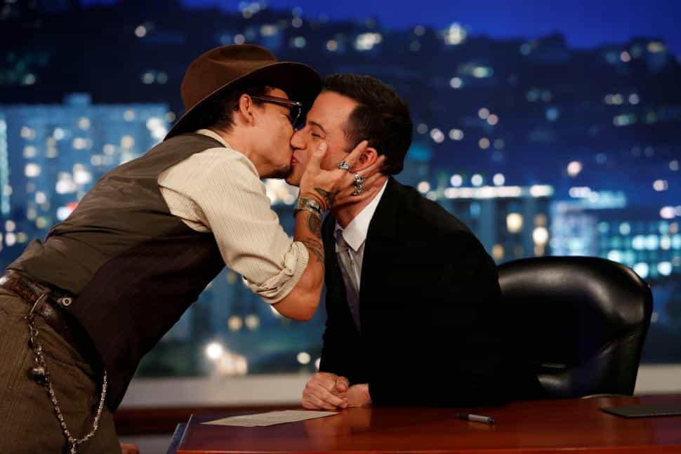
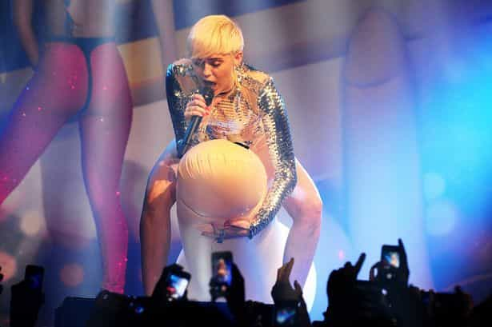
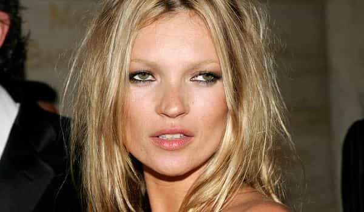

< < < Back
12 Ways Famous Celebrities Are Like Little Children Trapped In Adult Bodies – Return Of Kings
We have long seen the Hollywood clique used as a tool to infantilize the general population, by exhorting them to mimic bad behaviour through mass media coverage. It acts as a smoke screen to divert the attention of the mob from the real issues and pushes ideas in a far more pernicious way.
The more we witness this, the more obvious it becomes that the people under the spotlights are, in fact, little more than infants trapped in adult bodies. Because who does not want to be the popular Peter Pan? Attention, marbles, free candy bars. And the worse your conduct, the greater the rewards!
The decision makers downplay the seriousness of their actions, just like parents that would look away from the child’s poor behaviour. It might explain why “celebrities,” especially female ones, are given free passes when caught red-handed while doing something reprehensible. Are they above laws? The parallel is disturbing, to say the least, and boils down to these 12 traits:
1. An obsession with being the center of the universe

Schoolyard exhibit #1 : “Look at me, look at me, look at meeee”
Everything has to be exposed, willingly, or by being “cleverly orchestrated.” The attention cannot be focused on something else, hence the pathetic amount of attention-whoring that “stars” with a stalling career display, in a hope to save their dying glory. Give them your time and money, more exciting downfall to come.
2. An ever-changing moral compass
I am in “insert popular kid”‘s group now and you are a big meanie since this morning
“Stars” will endorse the cause du jour for getting more supporters in the school yard. “Yes Means Yes,” the Big Evil White, the gender pay gap… the mercenaries will follow the direction where the wind of trend blows and the war spoils, in the form of statuettes and awards, will rain. Keep it low profile, follow the herd and when your overlords say: “Jump!”, ask: “How high?”.

Anything for good ratings, eh, Jimmy?
3. An absence of shame

Shame and intimacy are subjects that were not covered at Hollywood K-12. “Wardrobe malfunction” and “nipple slip” are so innocent and make it sound so involuntary. Just like the little girl in the schoolyard that lifts her dress in front of the boys to test their reaction, then more than once when she notices their curiosity. Here their classmates have no references to understand what shame is and Mommy Government just lets them express themselves.
4. A constant discovery of their body
They will tattoo or pierce themselves like a toddler that scribbles on his arm if you leave him alone with markers. It would not be a concerning issue if the guys in charge where not so hell-bent on selling these acts as being normal to our own children.
5. A problem with authority

I will do what I want, Daddy, because I hate you!
They will push buttons and test borders knowingly. Just like children torturing animals, they will experiment and sometimes be cruel. But if punishment or scrutiny ever comes around, they will evade responsibility, shift the blame, or flat out lie. Big crocodile tears, invented mental disorders, and gentle breakdowns always help.
6. An addiction to romance-related drama

Exchanging hashtags and dedicated selfies is no different from passing around little papers in class with the words “Do you want to go out with me? Tick one of the boxes. Yes/No.” Then in a matter of seconds, the last craze is how Jenny kissed Mark behind the bins while she was still with Brandon. The guilt resides both in them and with the audience for giving the slightest interest to this silliness.
7. A perpetual victim mindset
“Waaaaah! She took my tooooooyyy!”
“Johnny invites Karl to his party but not me. Why, why? What did I do to deserve this?”. Those airheads strongly believe that the entire cosmos is united against them. No point seeing the beam in their own eye. The fragile comets cave in under blame or flee it so fast, you would think Satan himself were whipping them.
8. A big problem with moderation

“But I want to go on the carousel again!”
It is always time for fun and games. Big notions like “taking responsibility” and “setting a poor example” are scary. Instagram and charity cocaine trains are much more fun. Where adults know that all the good things come to an end, Hollywood shiny rats just cannot imagine that one day the fun will have to end, and that reality will fall on them like a ton of bricks.
9. A complete lack of financial sense
The child is carefree by definition. His parents sort out life issues for him and it is just one happy ride. Like an obese youngster with an endless supply of lollies, the SJW cinematic arts cartel thrive in extravagance without really knowing where money comes from or on which tree it grows.
10. An omnipresent aggressiveness
Actors, singers, and starlets remind me of acne-ridden teenagers chock full with hormones that can snap at any disagreement. Name calling, food battles, and cat fights take place on a regular basis at the Hollywood School for the Mentally Challenged. Whereas adults can control their emotions and use reason, millionaire toddlers will trash hotel rooms and physically assault peers and common folk as if it was expected of them.
11. A morbid obsession for praise

“OMG. Grrl, you so brave. #DownWithTheBlackLivesThatMattersForThePatriarchyOfHillary2016”
Just like the drawings on the fridge or the fresh sand castle, mommy state looks and swoons when its little one ties its shoelaces by itself or finds a new way to express its true self. Come on now, sweetheart, lecture everyone about refugees while you sip Martinis in your all-white closed-gate community, that will show them.
It is like a monkey roller-skating. It looks ridiculous but we need to give our support no matter what, it means so much to him!
12. A deep love for make believe
“I am a woman”. Just like saying “Look, I am a plane. Weeeee!”
It is so simple. In our Brave New World, you just have to say it and you are it! The delusion is total but at the same time, what can we expect in a place where the crazies run the asylum? Like toddlers, they also have their own way to say things. Get your dictionary of Newspeak for the next Golden Globes or Academy Awards or you won’t be able to follow who is who.
Le mot de la fin
I am as partial as anyone towards a nice pair of boobs. I am biologically programmed to seek them. But clicking that thumbnail makes the cogs of the machine move, even slightly. This is where reason intervenes and controls passion, an adult way to deal with the matter.
We could scoff at their trifles and ignore them but by the force of circumstances, we have to stop this madness. Now, it is not only great for the fat girl to be proud to be morbidly obese or the flamboyant kid to be a squealing fruit cake. But the normal kids have to be ostracized into submission.
This particular schoolyard is poisonous, invasive, and forces you to copy it if you do not want to be given the dunce cap with all the “-ist words” on it. We must act.
Read More: Our Critics Are Adult Children